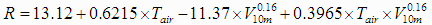

Le refroidissement éolien est l'effet de refroidissement du vent combiné à de basses températures.
Par temps calme, notre corps nous isole quelque peu de la température extérieure en réchauffant une mince couche d'air proche de la peau, appelée couche limite. Lorsque le vent souffle, il emporte cette couche d'air protectrice avec lui, exposant la peau à l'air froid. Le corps doit ensuite produire de l'énergie pour réchauffer une nouvelle couche protectrice. Si le vent emporte ces couches les unes après les autres, la température de la peau baisse et l'on ressent davantage le froid.
Les êtres humains ne ressentent pas directement la température de l'air. Quand nous sentons qu'il fait froid, nous ressentons en fait la température de la peau. Parce que la température de la peau est plus basse quand il vente (la peau perd de la chaleur plus rapidement qu'elle n'en reçoit du corps), nous ressentons davantage le froid quand il y a du vent. Cette sensation est ce que l'indice de refroidissement éolien tente de quantifier. Il faut noter que bien que l'indice de refroidissement éolien soit exprimé selon une échelle de température (au Canada, l'échelle Celsius), il n'est pas une température : il n'exprime qu'une sensation humaine.
L'indice de refroidissement éolien est déterminé au moyen d'un modèle de la température de la peau soumise à diverses conditions de vent et de température. Ce modèle a été validé au moyen d'essais cliniques. Il tient compte de la baisse de température de la peau qui résulte de la perte de chaleur causée par le vent et le froid, et de l'effet de la baisse de la température de la peau sur le taux de perte de chaleur. On peut toutefois en approximer les résultats (à l'unité près) au moyen de l'équation suivante :

Tiré du site de Environnement Canada.
http://www.msc.ec.gc.ca/education/windchill/science_equations_f.cfm